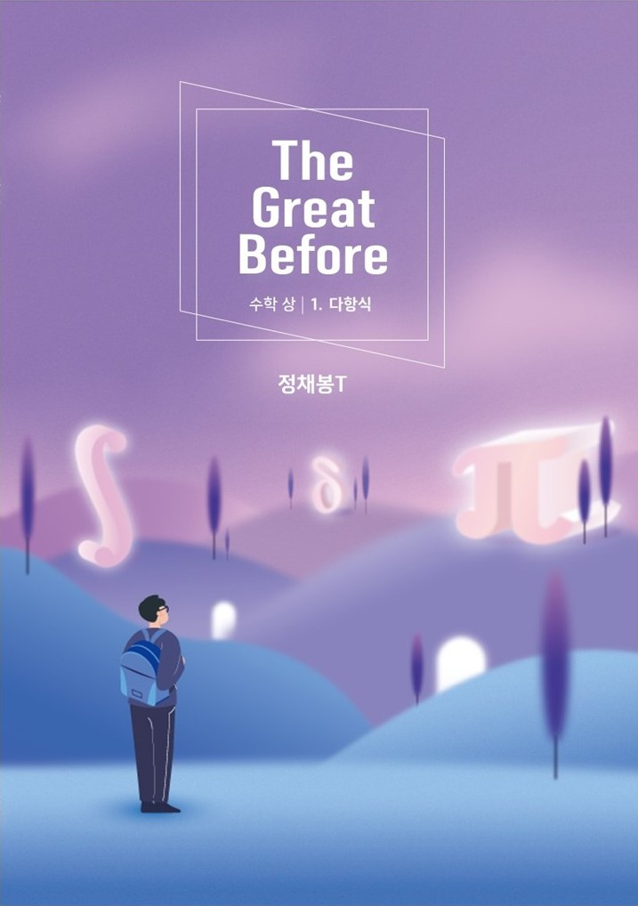
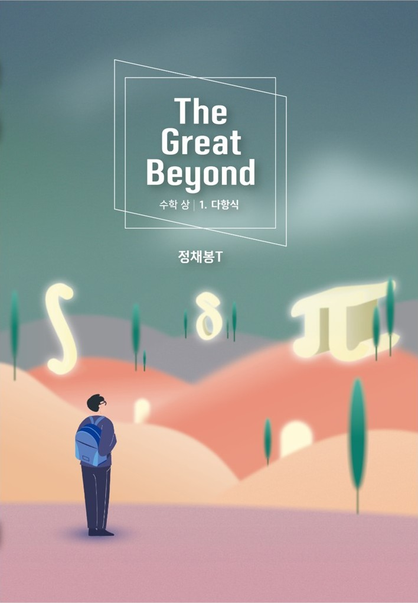
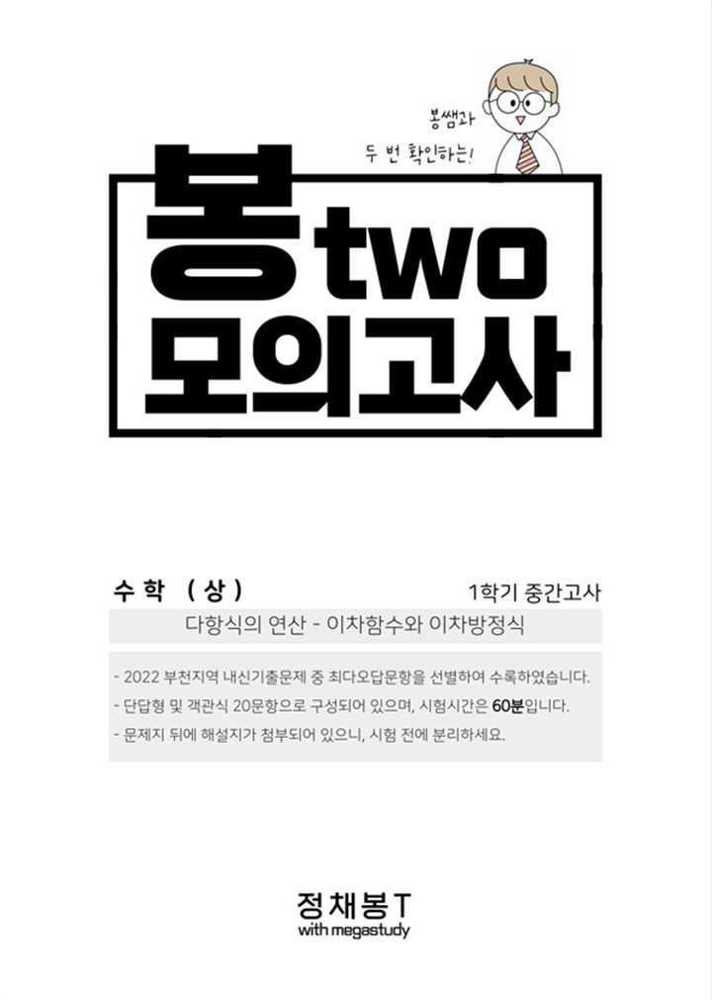

개념어에 대한 재정의와 공식에 대한 엄밀한 증명으로 뼈대를 단단히 하는 수업

풀이시간 단축을 위한 다양한 스킬 소개와 연습, 실전적 개념학습을 통한 완벽한 내신대비

교과서, 부교재, 유인물과 교육청 기출까지 주제별로 배열하여 재해석!
1학년 공통수학부터 확률과 통계, 기하, 미적분 선택과목까지 모든 과목 커리큘럼 & 자체교재 보유
23년도 기하 완강(학원 유일) / 24년도 확률과 통계, 기하 완강(학원 유일) ▶ 수강생 전원 A등급 달성
버튼을 눌러 이동하세요. 지금 보고 있는 페이지는 보라색으로 표시돼요.